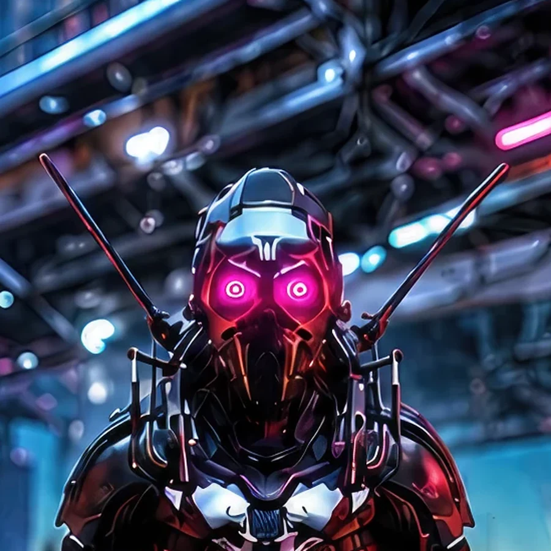
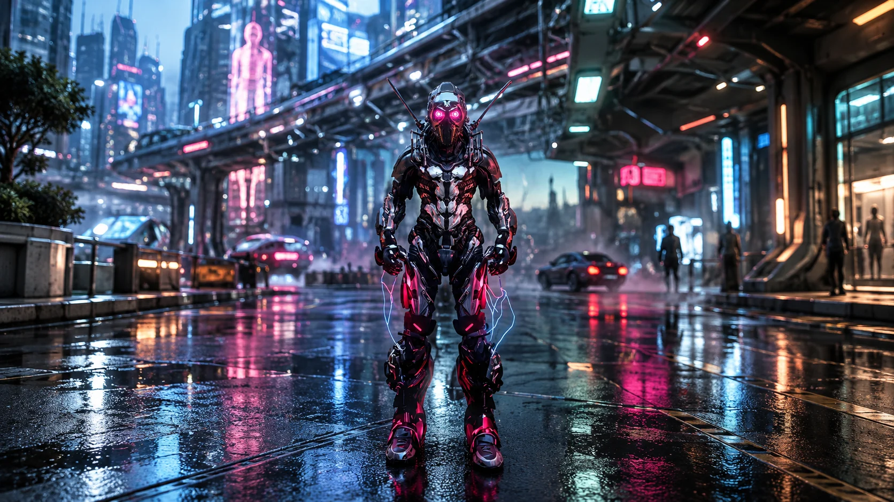
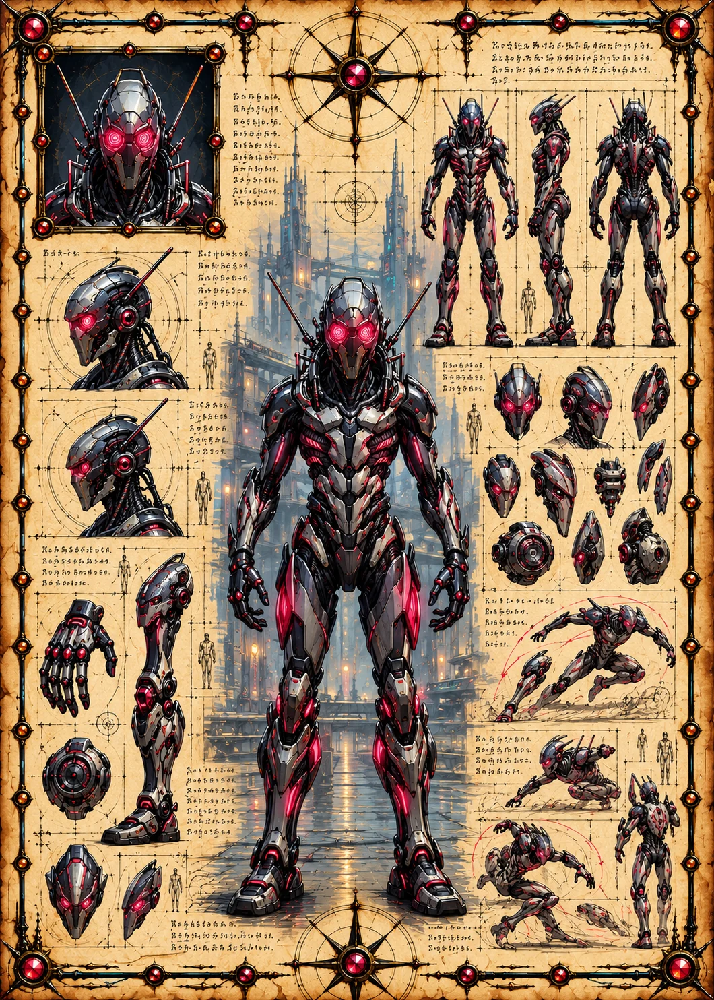

Field Observation
A tall magenta beacon glows above the buildings on the right.
 ©
©
GENEZYS ARCHIVE · EARTH 1 · Synthbot
Hive Director
Identity & combat record
Archive node 01 / 05

Archive record
Mir commands a cloud of microscopic machines that think as one. The Nano Swarm smothers one enemy's energy completely while a second target takes the sting. The Syndicate recovers every particle Mir loses, and rebuilds the swarm overnight.
Combat signature
Releases cloud of microscopic particles: Sets the target's Cosmara to 0 for 1 round. Deals 100 pierce damage to a different enemy.
Genezys 04:06 ™&©2026LEGIONS
Recovered visual record
Archive node 02 / 05

Full frame available // rotate device to landscape
Technical archive
Archive node 03 / 05

Classified field intelligence
Archive node 04 / 05
FIELD REPORT // BEACON REPORT
Field Observation
A tall magenta beacon glows above the buildings on the right.
Environment
Object Analysis
Key Findings
Motion archive
Archive node 05 / 05
Motion record not yet recovered